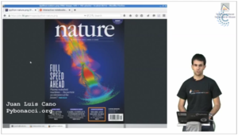
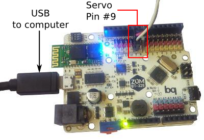
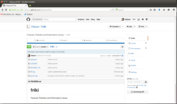

Videoblog
Contenido
[ocultar]- 1 Introducción
- 2 Descargas
- 3 PLAYLIST
- 4 1 Demo: Moviendo servos con Widgets interactivos desde un notebook de Jupyter
- 5 2 Moviendo un servo desde un Notebook de Ipython (parte 2)
- 5.1 Descripción
- 5.2 Explicación
- 5.2.1 Paso 1: Instalar Ipython 3.0
- 5.2.2 Paso 2: Instalar pyserial
- 5.2.3 Pase 3: Bajarse el proyecto zum-servos de github
- 5.2.4 Paso 5: Realizar las conexiones en la plaza zum / Arduino
- 5.2.5 Paso 6: Cargar el firmware zum_servos_fw.ino a la placa zum / Arduino
- 5.2.6 Paso 7: Lanzar el notebook de zum-servos-example-1
- 5.2.7 Paso 8: Ejecutar el notebook
- 6 3 El nuevo Openscad 2015.03
- 7 4 Demo de objetos paramétricos en Python desde Freecad
- 8 5 Trasteando con el BQ Aquaris E4.5 Ubuntu Edition
- 9 6 Configurando el BQ Aquaris E4.5 Ubuntu Edition para frikear
- 10 7 Instalacion y configuración de herramientas del escritorio para frikear con el BQ Aquaris E4.5 Ubuntu Edition
- 10.1 Descripción
- 10.2 Explicación
- 10.2.1 Paso 1: Configuración del repositorio
- 10.2.2 Paso 2: Instalación de paquetes en el PC
- 10.2.3 Paso 3: Primera prueba. Tomar un pantallazo
- 10.2.4 Paso 4: Accediendo a la línea de comandos desde el PC
- 10.2.5 Paso 5: Configurar la imagen del móvil en modo escritura
- 10.2.6 Paso 6: Instalando python
- 11 8 Instalando ubuntu desde 0 en tu BQ Aquaris E4.5 Ubuntu Edition
- 12 9 Jugando con vectores en Freecad y Pyooml (Parte 1)
- 13 10 Jugando con vectores en Freecad y Pyooml (Parte 2)
- 14 11 Cinemática directa de un brazo robot de 2 grados de libertad con Freecad y Pyooml
- 15 12 Proyecto Icestorm: Herramientas libres para sintetizar diseños en FPGAs
- 16 Repositorio
- 17 Enlaces
- 18 Autor
- 19 Licencia
- 20 Créditos
- 21 Sobre este VideoBlog
- 22 Noticias
- 23 Enlaces
Introducción
En estos vídeos cortos mostraré cosas que me parecen interesantes: píldoras de conocimiento, demostraciones, últimas novedades, noticias, etc. Siempre la temática en común es Software libre, hardware libre y patrimonio tecnológico de la humanidad. No estoy interesado en la tecnología que no es libre.
| A partir del capítulo 12, la wiki se ha migrado a esta nueva en github |
|---|
Claves
Tutorial. Tutoriales. Videotutorial. Videotutoriales. Videoblog. Patrimonio tecnológico de la humanidad. Píldoras de conocimiento
Descargas
| Todos los ejemplos están en el repositorio de este videoblog en github |
PLAYLIST
| PLAYLIST DEL VIDEOBLOG |
|---|
1 Demo: Moviendo servos con Widgets interactivos desde un notebook de Jupyter
| Video blog 1 |
|---|
Descripción
Demostración del movimiento de un servo a través de un notebook usando los nuevos widgets interactivos de IPython 3.0 (Proyecto Jupyter). La nueva versión de IPython la puedes instalar siguiendo estas instrucciones
El concepto de notebook es muy potente e interesante. Está pensado fundamentalmente para que los usen científicos e ingenieros, pudiendo representar ecuaciones, programar algoritmos, escribir documentación, poner vídeos... todo en una página abierta desde el navegador.
Pero como los notebooks se programa en python, que es un lenguaje de propósito general, se pueden adaptar fácilmente para diferentes aplicaciones. Una de ellas es controlar servos. Esto abre las puertas para poder controlar robots artículados basados en servos. Y así se pueden probar algoritmos nuevos de generación de locomoción, caminatas, etc. También es muy útil para depurar la mecánica de los robots y ajustar las posiciones iniciales de los servos. Todo ello desde el navegador. Multiplaforma. Sencillo. Y por supuesto libre.
Los ejemplos están subidos en este repositorio de github
|  Juan Luis Cano. Segunda edición del curso python para científicos e ingenieros (click para ampliar) |
La inspiración de esta aplicación ha venido por los excelentos tutoriales que ha dado Juan Luis Cano, de Pybonnacci, en la segunda edición del curso python para científicos e ingenieros organizado por la Universidad de Alicante. Con ellos he descubierto los widgets interactivos y lo fáciles que son de usar en el nuevo Ipython 3.0. ¡Gracias Juanlu! :-)
Hardware usado en la demo
- Un servo Futaba 3003, instalado en un módulo Y1 (para apreciar mejor el movimiento)
- La placa bq ZUM BT-328, donde se conecta el servo. También se puede usar una placa Arduino. Se conecta al portátil a través de un cable USB
Agradecimientos
- A Juan Luis Cano, de Pybonacci, por el excelente curso de python. ¡Muchísimas gracias!
Enlaces
- Playlist de la segunda edición del curso de Python para Científicos e ingenieros
- este repositorio de github: Repositorio en github con los ejemplos
- Proyecto Jupyter
2 Moviendo un servo desde un Notebook de Ipython (parte 2)
| Video blog 2 |
|---|
Descripción
Explicación rápida de los pasos a seguir para mover los servos desde nuestros notebooks de Ipython 3.0
Explicación
Los pasos a seguir son los siguientes:
Paso 1: Instalar Ipython 3.0
Esto depende del SO y entorno python que tengáis. Podéis encontrar instrucciones en este enlace
En mi portátil tengo Ubuntu 14.10. Las pruebas las he hecho instalando Anaconda y luego ejecutando:
conda update conda conda update ipython ipython-notebook ipython-qtconsole
Una vez instalador podemos hacer una comprobación rápida, ejecutando en el terminal esto:
$ ipython --version 3.0.0
Paso 2: Instalar pyserial
La instalación de la biblioteca pyserial dependen también de vuesltro entorno. Aquí os dejo un enlace a las instrucciones
Desde ubuntu se instala muy fácilmente con el siguiente comando:
sudo apt-get install python-serial
Podemos comprobar si lo tenéis correctamente instalado ejecutando el intérprete de ipython e importando la biblioteca con import serial. Si no estuviese correctamente instalada aparecería un mensaje de error
Pase 3: Bajarse el proyecto zum-servos de github
El firmware, los programas en python y los notebooks están en el proyecto zum-servos en github. Bien descargar el zip o clonar el proyecto en tu ordenador local.
Paso 5: Realizar las conexiones en la plaza zum / Arduino
- Conectar el servo Futaba 3003 o compatible al PIN #9 de la placa zum / arduino
- Conectar la plaza zum / arduino al ordenador, mediante el cable USB
|  |
Paso 6: Cargar el firmware zum_servos_fw.ino a la placa zum / Arduino
Arrancar el entorno del arduino. Abrir el firmware de la carpeta zum-servos/firmware/zum_servo_fw. Seleccionar la placa, el puerto y cargar el firmware en la placa zum / arduino. Para descargar en la zum hay que seleccionar la placa: Arduino BT w/ ATmega328
Paso 7: Lanzar el notebook de zum-servos-example-1
Vamos a la carpeta zum-servos/python y arrancamos el notebook:
$ ipython notebook
En una pestaña del navegador nos aparecerá la página principal del Ipython Notebook con todos los notebooks que podemos seleccionar. Pinchamos en zum-servos-example-1.ipynb para que se nos abra el notebook
Paso 8: Ejecutar el notebook
Bajamos hasta la zona donde comienza el código en python y ejecutamos las celdas. Antes de ejecutar la celda 4, configurar el nombre del puerto serie en el que está conectada la placa zum / arduino. En mi portátil está en el puerto serie /dev/ttyUSB0
Por último ejecutamos la celda 12 y nos aparece la barra deslizadora. Al desplazarla se moverá el servo. La última celda es un ejemplo de generacion de una secuencia de movimientos del servo.
3 El nuevo Openscad 2015.03
| Video blog 3 |
|---|
Descripción
En Marzo de 2015 se acaba de liberar la nueva versión de Openscad: 2015.03. Se describen brevemente las principales mejoras: texto integrado, listas por comprensión, comando offset, comando surface y mejora de la interfaz gráfica
Explicación
Al arrancar el openscad 2015.03 aparece una pantalla de bienvenida que nos permite rápidamente crear un diseño nuevo, cargar alguno reciente o acceder a los ejemplos y documentación. Vamos a crear un documento nuevo pinchando en new.
Lo primero que vemos es la mejora en la interfaz gráfica. Se han añadido botones en el visor para cambiar las vistas y las propiedades de visualización. Muy cómodo. Especialmente útil es el botón de centrado de la pieza.
Creamos un cubo "hola mundo" para trastear un poco con el nuevo openscad
Una de las mejoras es la creación de texto en 3D. Antes había que utilizar bibliotecas externas. Ahora está integrado en Openscad. Esto hace muy fácil el crear llaveros y objetos con texto 3D. Se realiza con el comando text. Este es un ejemplo "hola mundo" que genera el texto "¡Hola!" en 3D
linear_extrude(height = 5)
text("¡Hola!", size = 50, halign = "center", font = "Liberation Sans", $fn = 20);
Para acceder a los tipos de letras que ha detectado openscad en nuestro sistema, nos vamos a la opción Help / Font List y se nos despliega una ventana con todos los tipos que podemos usar.
Otra novedad: Las listas por comprensión. Es un método muy potente para crear listas de elementos. Permite por ejemplo crear polígonos y figuras 2D a partir de sus vértices:
l = [for (i=[0:4], a = 360 * i/5) [10 * sin(a), 10*cos (a)]]; echo(l); polygon(l);
Otro comando nuevo introducido es offset, que nos permite agrandar o achicar figuras 2D una distancia fija. Muy útil para hacer piezas que encajen unas dentro de otras, definiendo una tolerancia.
Este es un ejemplo sencillo de uso de offset:
offset(1)
union() {
square([10, 20]);
square([20, 10]);
}
El comendo surface permite crear un objeto 3D a partir de una imagen. Según el color de los pixeles de la imagen se crean las partes del objeto a diferentes alturas. Este es un ejemplo usando el logo de obijuan academy:
surface("logo.png", center = true);


Descarga de ficheros
| text-example.scad | Ejemplo de creación de letras 3D: "¡Hola!" |
| list.scad | Ejemplo de uso de las listas por comprensión |
| offset.scad | Ejemplo del comando offset |
| surface_image.scad | Ejemplo del comando surface: logo de obijuan academy |
4 Demo de objetos paramétricos en Python desde Freecad
| Video blog 4 |
|---|

Descripción
Demostración de cómo crear objetos usando scripts de python en Freecad, utilizando la biblioteca pyooml
Explicación
Descargarse del github la biblioteca pyooml que de momento se encuentra dentro del proyecto friki. Desde el directorio friki lanzar Freecad
|  El proyecto Friki en github (click para ampliar) |

Creamos un documento nuevo y lanzamos la consola de python desde el menu View / Views / Python Console. Desde la consola pulsamos el botón derecho del ratón y le damos a la opción de "Clear console" para dejar la consola limpia.
Freecad tiene una API en python que nos permite hacer lo mismo que usando los botones de la GUI, y muchísimas más cosas.


Pyooml (Python Object Oriented Mechanics Library) es una biblioteca que usa la API de Freecad para crear objetos muy fácilmente, de manera similar a como se trabaja en Openscad. Primero importamos la biblioteca pyooml con:
from pyooml import *
Ahora lanzamos un cubo "hola mundo" con el comando cube()
cube(10, 10, 10)
Nos aparece un cubo tal cual lo hubiésemos lanzado dese el escenario Parts donde al botón del cubo. Tenemos acceso a sus propiedades. Y lo modemos modificar mediante la Gui. Con el método translate() podemos colocar los cubos en cualquier posición:
cube(10, 10, 10).translate(5,5, 10)


Ahora vamos a hacer uniones de cubos. Primero definimos el vector s para que tenga las dimensiones del cubo:
s = FreeCAD.Vector(10,10,10)
Creamos el primer cubo y se lo asignamos a la variable c1:
c1 = cube(s)
Ahora el segundo cubo, asignado a la variable c2:
c2 = cube(s).translate(s.x/2, s.y/2,0)
Por último hacemos la unión usando el operador +:
pieza = c1 + c2
Se puede ver en el árbol de la izquierda cómo aparece el objeto Union, y dentro los dos cubos


Vamos a crear una cruz de ejemplo. La creamos mediante una única expresión, haciendo la unión de dos cubos centrados en el origen
cross = cube(40, 10, 10, center = True) + cube(10, 40, 10, center = True)
Este nuevo objeto lo trasladamos 5mm en el eje z:
cross.transate(0,0,5)


Hacemos una base y la unimos a la cruz para tener la pieza final
base = cube(50,50,10, center = True) pieza = cross + base


La verdadera potencia está en ejecutar directamente los scripts. El modo interactivo está muy bien para aprender. Cerramos la consola de python y abrimos el fichero pyooml.py desde la opción del menú file / open
Recolocamos las ventanas con la opción Window / Tile. A la izquierda tenemos el código en python, y a la derecha el visor 3D. Le damos al triángulo verde superior para ejecutar el scripts. Tarda unos minutos en realizar todos los cálculos. Finalmente nos aparecerá el objeto de la figura


5 Trasteando con el BQ Aquaris E4.5 Ubuntu Edition
| Video blog 5 |
|---|


Descripción
Mini demo de mi nuevo teléfono BQ Aquaris E4.5 Ubuntu Edition. Me centro en el aspecto fundamental: el software libre. El kernel se puede compilar y flashear. La gran mayoría de las aplicaciones de la ubuntu store son software libre, por lo que están disponibles las fuentes para poder estudiarlas y modificarlas. Y puedes abrir el Terminal de comandos, e instalar paquetes con apt-get install :-)
Su belleza está en la libertad
Explicación
Os presento el teléfono BQ Aquaris E4.5 Ubuntu Edition que me acabo de comprar. Se divide en scopes. El scop principal es el que tiene los iconos de las aplicaciones, y donde se encuentra el acceso a la ubuntu store para descargar apps. Hay scopes de noticias, música, vídeos... pero me ha gustado encontrar uno sobre Freecad, donde hay tutoriales. Y entre ellos han puesto los de obijuan academy :-)


Pero al margen de lo que trae y cómo está organizado, y al margen de la funcionalidad... hay algo que destaca sobre el resto de móviles, que es más importe: el software libre. El kernel de linux usado está publicado en este repositorio de github, junto con las instrucciones para compilarlo y "flashearlo" en el móvil. Hay que elegir la rama Aquaris E4.5 Ubuntu-rtm.


Esta filosofía del software libre está también en las aplicaciones. A diferencia de Android donde la mayoría de las aplicaciones son gratis, aquí la mayoría son LIBRES. Es decir, que están las fuentes disponibles. Que tenemos acceso al conocimiento de cómo están hechas. Por ejemplo vemos la aplicación 100balls, de la tienda. Tiene licencia GPL. Otra es la QT3D Cylinder.


Las fuentes de QT3D Cylinder se encuentran en este repositorio en github

Para cambiar entre las aplicaciones que están lanzadas hay que acceder al borde derecho y tirar hacia la izquierda. Vamos a seleccionar el explorador de archivos, que tiene la misma apariencia que el Nautilus de Ubuntu en el PC


Tirando del borde izquierdo hacia la derecha aparece el lanzador de aplicaciones. Yo ya lo tengo configurado y tengo puesto el terminal de comandos. Por defecto no viene (ya enseñaré en otro videoblog cómo configurarlo). Lo lanzamos y se nos abre la terminal de linux. Ahora es cuando podemos experimentar el poder de nuestro ubuntu phone muajajajajajajaja


Desde el terminal vamos a probar algunos comandos:
$ ls
Aparecen los ficheros que están en nuestro home. Vamos a ver la versión del kernel con:
$ uname -a
Python NO viene instalado por defecto, pero yo lo tengo instalado. Vamos a ejecutar un programa en python "hola mundo":
$ python hello.py


Vamos a instalar el paquete python-pip, que nos permite poder instalar muchos más paquetes python. Lo hacemos mediante este comando:
$ sudo apt-get install python-pip
Luego comprobamos que está correctamente instalado, ejecutándolo sin argumentos:
$ pip
Por defecto, en nuestro teléfono ubuntu NO PODEMOS usar apt-get. La imagen grabada es de SOLO LECTURA y al ejecutar este comando obtendremos un error. Para que funcione tenemos que configurar la imagen para que sea tanto de lectura como de escritura. Los detalles los contaré en otro video, pero para los ansiosos os diré que tenéis que tenéis que instalar las utilidades: phablet-tools en vuestro linux y ejecutar el comando: phablet-config writable-image (también es necesario que el teléfono esté configurado en modo desarrollador)
¡Listos para frikear!
6 Configurando el BQ Aquaris E4.5 Ubuntu Edition para frikear
| Video blog 6 |
|---|

Descripción
Configuraremos el ubuntu phone para que podamos frikear con él. Instalaremos la consola y el gestor de archivos
Explicación
Parto del supuesto de que tienes un ubuntu phone en su estado original, recién comprado o flasheado. Asegúrate de que no tienes ningún dato importante. Los pasos a seguir a seguir son:
Paso 1: Entrar en el modo desarrollador
Abrir el lanzador deslizando el borde izquierdo hacia la derecha. Seleccionar el icono de la configuración


Nos vamos a la parte inferior de la configuración y buscamos la opción "Acerca de este teléfono". Pulsamos para entrar


Nuevamente nos vamos a la parte inferior y pinchamos en "modo de desarrollador". Activamos la opción Modo de desarrollador. NOTA: El modo desarrollador sólo lo podemos activar si previamente hemos establecido un código o contraseña. Si no es así, debemos pulsar en "Seguridad de bloqueo"


Usando la opción "codigo de 4 digitos" establecemos el código "1234". Será nuestro pin de frikeo. Ahora ya podemos activar el modo desarrollador


Con este modo activado ya nos podemos comunicar desde nuestro PC con el móvil ubuntu, para flashear, instalar paquetes, configurar, etc. Esto lo veremos en el siguiente video
Paso 2: Instalar la APP de Terminal en el ubuntu phone
La terminal de comandos es indispensable. Nos permitirá instalar aplicaciones, ejecutar programas, etc, de manera autónoma en nuestro móvil, sin tener que estar conectados al pc. Aunque es cierto que para desarrollar es infinitamente más cómodo estar conectado al pc. Pero, tener una consola en tu móvil mola. Mola muchísimo :-)
Por defecto la consola NO viene instalada. Para ellos, nos vamos al scope de las aplicaciones. Y arrancamos la tienda de ubuntu (está en la parte inferior)


Abrimos el desplegable. La consola está en la categoría de Utilidades. Pinchamos en ellas. En la pantalla bajamos hasta encontrar el terminal. Está muy carca del gestor de archivos, que también instalaremos posteriormente.


Entramos en la página del terminal y pinchamos en el botón de Instalar. Si es la primera vez que instalamos una aplicación en el móvil, tendremos que iniciar sesión en Ubuntu ONE. Introducimos nuestros datos y le damos a Iniciar sesión. Si no tenemos cuentas le damos a "Soy un usuario nuevo de Ubuntu One. Créame una cuenta". Las siguientes veces que queramos instalar una aplicación se nos registrará automáticamente.


Una vez instalada pulsamos en el botón de Abrir. Nos pedirá que introduzcamos nuestra contraseña. Tecleamos el pin de frikeo "1234" que habíamos configurado antes


y... ¡Se nos abre el flamante terminal!!!!! Ya podemos frikear!!! Aunque podemos ejecutar comandos y movernos por los directorios, todavía no podemos instalar con apt-get install. Es necesario configurar la imagen para que sea de lectura/escritura. Lo haremos en el próximo vídeo
Vamos a dejar el terminal en el lanzador. Deslizamos el borde izquierdo para sacar el lanzador. Dejamos pulsado unos sengundos el icono del terminal y pinchamos en la opción anclar. Ahora ya tendremos acceso directo al terminal desde el lanzador.


Paso 3: Instalar el gestor de archivos
El gestor de archivos es otra aplicación muy útil. Para instalarla hacemos lo mismo que antes: nos vamos a la tienda y lo encontramos en la categoría del utilidades. Pinchamos y le damos a instalar. Ahora no será necesario iniciar sesión en ubuntu one. Una vez instalado, le damos al botón de abrir. Opcionalmente lo podemos anclar al lanzador, de la misma manera que hemos hecho con el terminal


En el gestor abierto no tenemos acceso de administrador. Para tener acceso total pulsamos en la parte superior derecha y le damos a la opción "Desbloquear acceso". Introducimos nuestra clave (pin de frikeo 1234)


Para ir a un directorio concreto dentro del sistema, tenemos la opción de escribir la ruta. Para ello nos vamos a la pestaña inferior que pone "places" y deslizamos hacia arriba. Nos aparecerá otro gestor de archivos con la opción en la parte superior de introducir la ruta. Introducimos el directorio raiz "/"


Y nos aparecen todos los ficheros de nuestro directorio raiz.

Ya tenemos nuestro ubuntu phone listo para trastear con él!!! :-)
7 Instalacion y configuración de herramientas del escritorio para frikear con el BQ Aquaris E4.5 Ubuntu Edition
| Video blog 7 |
|---|

|
Descripción
Instalaremos las herramientas necesarias en el pc para frikear. Configuraremos la imagen del ubuntu phone en modo lectura / escritura para poder instalar paquetes con apt-get install. Es necesario que el móvil esté configurado en modo desarrollador, como vimos en el videoblog anterior
Explicación
| |
|---|
| ¡¡¡CUIDADO!! Los comandos que vamos a usar en este video-tutorial pueden ser peligrosos para tu móvil. Tienes que saber lo que estás haciendo. No me hago responsable de cualquier pérdida de datos o daños causados en el móvil. Úsalo bajo tu propia responsabilidad |
La documentación oficial de ubuntu para instalarlo en los móviles está disponible en este enlace.
Paso 1: Configuración del repositorio
Configuraremos el siguiente repositorio (PPA), donde se encuentran las herramientas de desarrollo que instalaremos:
$ sudo add-apt-repository ppa:ubuntu-sdk-team/ppa $ sudo apt-get update
Paso 2: Instalación de paquetes en el PC
Instalar los siguiente paquetes:
- Herramienta para flashear:
$ sudo apt-get install ubuntu-device-flash
Adicionalmente nos instalará las herramientas: adb y fastboot
- Utilidades para trabajar con el móvil conectado por USB: phablet tools:
$ sudo apt-get install phablet-tools
Paso 3: Primera prueba. Tomar un pantallazo
Para comprobar que funciona todo bien vamos a usar la herramienta phablet-screenshot para tomar un pantallazo del ubuntu phone desde nuestro PC:
- Conectamos el ubuntu phone mediante el cable USB.
- Nos aseguramos que está desbloqueado (Deslizando la pantalla hacia la izquierda y metiendo el código)
- Ejecutamos el comando:
$ phablet-screenshot test1.png

Toma un pantallazo del móvil y nos lo graba en el directorio del PC desde donde hemos ejecutado el comando phablet-screenshot


Desde el propio teléfono se pueden tomar pantallazos apretando simultáneamente las teclas de volumen + y -
Paso 4: Accediendo a la línea de comandos desde el PC
A la línea de comandos del móvil podemos acceder a través del terminal que instalamos en el propio móvil en el tutorial pasado, sin embargo, es mucho más cómodo poder hacerlos desde el PC. Para ello ejecutamos el comando phablet-shell:
$ phablet-shell
La comunicación se hace a través de ssh, por lo que tenemos que tener las claves generadas. Si no es así nos aparecerá este mensaje:
$ phablet-shell no local key, please run the ssh-keygen command first, then run phablet-shell again
Ejecutamos ssh-keygen y le damos al enter en todas las preguntas que nos hace:
$ ssh-keygen Generating public/private rsa key pair. Enter file in which to save the key (/home/obijuan/.ssh/id_rsa): Created directory '/home/obijuan/.ssh'. Enter passphrase (empty for no passphrase): Enter same passphrase again: Your identification has been saved in /home/obijuan/.ssh/id_rsa. Your public key has been saved in /home/obijuan/.ssh/id_rsa.pub. The key fingerprint is: ...
Ahora ya sí que podemos acceder al terminal del móvil con phablet-shell:
$ phablet-shell /home/obijuan/.ssh/known_hosts updated. Original contents retained as /home/obijuan/.ssh/known_hosts.old Warning: Permanently added '[localhost]:2222' (RSA) to the list of known hosts. Welcome to Ubuntu Utopic Unicorn (development branch) (GNU/Linux 3.4.67 armv7l)
* Documentation: https://help.ubuntu.com/ Last login: Tue Mar 31 15:24:46 2015 from localhost.localdomain phablet@ubuntu-phablet:~$
Salimos de la consola del movil bien con el comando logout o pulsando Ctrl-D

Todavía no podemos instalar software con apt-get install. Si lo intentamos nos aparecerá este mensaje de error:
phablet@ubuntu-phablet:~$ sudo apt-get install python [sudo] password for phablet: W: Not using locking for read only lock file /var/lib/dpkg/lock E: Unable to write to /var/cache/apt/ E: The package lists or status file could not be parsed or opened. phablet@ubuntu-phablet:~$
Para solucionarlo hay que poner la imagen en modo de escritura, como se indica en el siguiente paso
Paso 5: Configurar la imagen del móvil en modo escritura
Para poder instalar aplicaciones con apt-get install, es necesario configurar la imagen del móvil para escritura
$ phablet-config writable-image
El móvil se reiniciará automáticamente para arrancar con la nueva imagen con permisos de escritura. Ahora ya podemos acceder a la consola, bien con phablet-shell o bien desde el propio móvil y empezar a instalar paquetes :-)
Paso 6: Instalando python
Vamos a instalar el intérprete de python para hacer pruebas y comprobar que el apt-get install funciona correctamente. Para ello arrancamos la shell con phablet-shell:
$ phablet-shell
Ahora instalamos python con:
phablet@ubuntu-phablet:~$ sudo apt-get install python


Listos para frikear!!!!!!!
8 Instalando ubuntu desde 0 en tu BQ Aquaris E4.5 Ubuntu Edition
| Video blog 8 |
|---|

|
Descripción
Explicación de cómo grabar un ubuntu nuevo ("flashearlo") en el BQ Aquaris E4.5 Ubuntu Edition desde 0. El teléfono quedará igual que como estaba al comprarlo
| |
|---|
| ¡¡¡CUIDADO!! Los comandos que vamos a usar en este video-tutorial pueden ser peligrosos para tu móvil. Tienes que saber lo que estás haciendo. No me hago responsable de cualquier pérdida de datos o daños causados en el móvil. Úsalo bajo tu propia responsabilidad |
Explicación
Al frikear con el ubuntu phone, se instalan muchos paquetes, se tocan muchas cosas y en general el móvil queda muy distinto a cómo llegó de fábrica. En este video se muestra cómo "flashear" el teléfono para dejarlo tal y como estaba recién comprado. Por tanto, TODOS LOS DATOS SE PERDERÁN.
Para poder flashear, el paquete ubuntu-device-flash necesita que el teléfono tenga activado adb en el modo "recovery". Los teléfonos recién comprados no tienen esta opción activada. Necesitamos usar una imagen que sí lo tengo activado.
Paso 1: Bajarse la imagen con adb activado en el modo recovery
Bajar la imagen de este enlace:
- Fichero: bq-E4_5-ubuntu-recovery.img
Paso 2: Apagar el ubuntu phone y reiniciarlo en el modo FASTBOOT
- Apagamos el teléfono
- Lo volvemos a encender dejando apretados a la vez el botón de encendido y el de subir el volumen


- Al cabo de unos segundos entramos en el modo de arranque (boot) donde nos aparece un menú de selección del modo de arranque. Con la tecla de SUBIR VOLUMEN desplazamos el cursos hasta la opción de FastBoot y apretamos el botón de BAJAR VOLUMEN para seleccionarlo


Paso 3: Flashear la última versión estable de ubuntu touch
Conectamos el teléfono al PC a través del cable USB. En el PC, abrimos un terminal en el directorio donde tenemos descargada la imagen bq-E4_5-ubuntu-recovery.img y ejecutamos este comando:
$ ubuntu-device-flash touch --channel ubuntu-touch/stable/bq-aquaris.en --bootstrap --recovery-image bq-E4_5-ubuntu-recovery.img
Automáticamente se nos empiezan a descargar los ficheros necesarios de ubuntu (en este caso la última versión estable) y se envían al móvil. Este proceso tarda unos 2 minutos (aunque depende de la conexión de internet que tengamos). Durante esta primera fase aparecerá un logo de ubuntu estático en el centro de la pantalla


El programa ubuntu-device-flash termina, aunque el flasheado todavía no. En esta segunda fase aparece un logo de ubuntu girando en sentido horario. El proceso tarda aproximadamente 3 minutos y medio. No tenemos que hacer nada. Sólo esperar.
Transcurrido ese tiempo, el teléfono se reinicia nuevamente y nos aparece el asistente inicial para configurar el teléfono. ¡Ya lo tenemos flasheado!


9 Jugando con vectores en Freecad y Pyooml (Parte 1)
| Video blog 9 |
|---|

Descripción
Freecad tiene una API para trabajar con vectores. En la bibliioteca pyooml se ha añadido el objecto svector() que permite visualizarlos en 3D. De esta forma es muy sencillo hacer operaciones matemáticas con vectores y luego obtener su representación en 3D. Es una herramienta muy útil para aprender sobre vectores, comprobar operaciones, realizar documentaciones, aplicarlo a la cinemática de robots, etc.
Explicación
Para probar los ejemplos que se muestran en el videoblog, primero hay que clonar el proyecto friki que está en el github. Abrimos una terminal y nos situamos en el directorio donde está el proyecto friki. Lanzamos Freecad. De esta forma, podremos importar directamente la biblioteca pyooml desde freecad sin tener que hacer nada adicional.


Configuramos las ventanas de freecad de forma que la consola de python se nos quede en la parte derecha en vertical. Así podemos ver mejor el historial de comandos.

Ejemplo 1
FreeCAD incorpora en su API la clase Vector, que nos permite definir vectores y trabajar con ellos. Vamos a importarla escribiendo:
>>> from FreeCAD import Vector
con ella podemos crear vectores matemáticos. Vamos a crear uno:
>>> v1 = Vector(30, 10, 0)
Podemos acceder a sus propiedades, como por ejemplo su componente x o su longitud:
>>> v1.x 30.0 >>> v1.Length 31.622776601683793 >>>
En la biblioteca pyooml se ha incorporado el elemento svector (Solid Vector) que permite visualizar los vectores de Freecad. Para visualizar v1 primero importamos la biblioteca pyooml (importamos todo su espacio) y llamamos a svector(v1):
>>> from pyooml import * >>> sv1 = svector(v1)
Ahora creamos otro vector (v2) y lo visualizamos también:
>>> v2 = Vector(10, 30, 0) >>> sv2 = svector(v2)


Vamos a sumar los vectores y visualizar el resultado. Creamos el objeto sv3 que dibujará el vector suma:
>>> sv3 = svector(v1 + v2)
Cambiamos el color a amarillo para distinguirlo de v1 y v2:
>>> sv3.color("yellow")
Por defecto los vectores se dibujan en el origen. Vamos a trasladarlo al extremo de v1 para visualizar la ley del paralelogramo:
>>> sv3.translate(v1)


También podemos calcular el producto vectorial de v1 y v2. Será un vector perpendicular al plano formado por v1 y v2. Para visualizarlo mejor, el resultado lo normalizamos y lo multiplicamos por 10 para que esa sea su módulo:
>>> v4 = v1.cross(v2).normalize() * 10
Ahora los mostramos en 3D, en color azul:
>>> sv4 = svector(v4).color("blue")
Comprobamos empíricamente que el producto vectorial NO es conmutativo. Si ahora multiplicamos v2 por v1, obtenemos el mismo vector, pero en sentido contrario:
>>> sv5 = svector( v2.cross(v1).normalize() * 10 )


Terminamos este ejemplo haciendo una diferencia entre el vector azul (v4) y el amarillo (v1 + v2):
>>> sv6 = svector ( v4 - (v1 + v2)).color("green")
y lo trasladamos al extremo del amarillo, para ver mejor la diferencia:
>>> sv6.translate(v1 + v2)

10 Jugando con vectores en Freecad y Pyooml (Parte 2)
| Video blog 10 |
|---|

|
Descripción
Además de vectores, con pyooml también podemos poner puntos y sistemas de referencia. Mediante rotaciones y traslaciones los colocamos donde se necesiten
Explicación
Lazamos freecad desde el directorio donde está el proyecto friki. Abrimos la consola de python. Lo primero que hacemos es cargar las bibliotecas que vamos a usar:
>>> from FreeCAD import Vector >>> from pyooml import *
Los sistemas de referencia los visualizamos con la clase frame() de pyooml:
>>> frame()
Vamos a colocar un punto. Definimos el vector v, y colocamos un punto en esa posición mediante point():
>>> v = Vector(10,10,10) >>> p = point(v)


Mostramos el vector de posición del punto, mediante un vector amarillo:
>>> sv = svector(v).color("yellow")
Dibujamos un cubo con uno de los vértices en el punto, y lo hacemos transparente con el método ice()
>>> c = cube(v) >>> c.ice(80)


Creamos otro sistema de referencia:
>>> f2 = frame()
y lo posicionamos en v:
>>> f2.translate(v)
Añadimos un tercer sistema de referencia y lo rotamos 30 grados con respecto a su eje x:
>>> f3 = frame() >>> f3.rotx(30)


Lo situamos en la posición v:
>>> f3.translate(v)
y lo desplazamos 10mm en dirección del eje de las x:
>>> f3.translate(10,0,0)
Vemos lo fácil que es montar nuestros sistemas de referencia para definir la cinemática de nuestros diseños :-)


Ejemplo 3
En este ejemplo se mostrará un dibujo del campo vectorial magnético a una distancia r provocado por una corriente que circula por un cable. Lo primero es ir a file/open y abrir el script: example-vector-field.py. En vez de ejecutarlo de manera interactiva, como antes, lo vamos a ejecutar de golpe. Le damos al triángulo verde superior. Se nos crea una ventana nueva y al cabo de unos segundos nos aparece el campo vectorial, junto con cable y un vector azul grande que indica el sentido de desplazamiento de la corriente.


11 Cinemática directa de un brazo robot de 2 grados de libertad con Freecad y Pyooml
| Video blog 11 |
|---|

Descripción
Ejemplo de lo fácil que es definir la cinemática directa de un brazo robot con 2 grados de libertad usando Freecad y Pyooml
Explicación
El brazo robot de ejemplo que usaremos es el de la figura 1. Consta de 2 articulaciones de ángulos a1 y a2, unidas mediante dos eslabones de longitudes L1 y L2. En total hay 3 sistemas de referencia: uno en el mundo, y uno en cada extremo de los eslabones.
Arrancamos freecad desde el directorio donde tenemos el proyecto friki y abrimos la consola de python para trabajar de forma interactiva


Importamos las bibliotecas que vamos a usar, como siempre:
>>> from FreeCAD import Vector >>> from pyooml import *
Definimos los parámetros de nuestro robot: los ángulos y las longitudes de los eslabones:
>>> a1 = -60 >>> a2 = 70 >>> L1 = 40 >>> L2 = 40
Ahora los vectores de los eslabones:
>>> v1 = Vector(L1, 0, 0) >>> v2 = Vector(L2, 0, 0)
y los elementos gráficos: 3 sistemas de referencia y 2 vectores sólidos para los eslabones:
>>> f0 = frame()
>>> f1 = frame()
>>> f2 = frame()
>>> sv1 = svector(v1).color("yellow")
>>> sv2 = svector(v2).color("yellow")
Por último definimos las transformaciones, referidas al sistema de referencia móvil:
>>> import HMatrix >>> Ma = HMatrix.Roty(a1) >>> Mb = HMatrix.Translation(v1) >>> Mc = HMatrix.Roty(a2) >>> Md = HMatrix.Translation(v2)
Empezamos a aplicar las transformaciones a todos los elementos. Primero el vector del eslabón 1:
>>> sv1.T = Ma
Le aplicamos la transformación Ma (que es una rotación alrededor del eje y un ángulo a1)


Colocamos el sistema de referencia f1 al final del eslabón 1, aplicando primero la transformación Ma y luego la Mb. Esto se consigue mediante la multiplicación de las matrices. Estas transformación siempre están referidas al sistema móvil
>>> f1.T = Ma * Mb
Colocamos el vector del eslabón 2. Aplicamos las transformaciones anteriores más la corresponidente a la rotación de la articulación a2:
>>> sv2.T = Ma * Mb * Mc


y el sistema de referencia f2 sobre el extremo del eslabón 2:
>>> f2.T = Ma * Mb * Mc * Md
La posición del extremo final la obtenemos muy fácilmente multiplicando esta última matriz de transformación por el vector de su origen (0,0,0). Nos devuelve las coordenadas con respecto al sistema del mundo f0. Con esto hemos resuelto la cinemática directa del robot: conocemos en todo momento la posición del extremo final en función de los ángulos a1, a2 y la geometría del robot (l1, l2):
>>> vr = f2.T.multiply(Vector(0,0,0))
>>> svr = svector(vr).color("orange")


Vamos a colocar los eslabones del robot, para que quede más bonito. Primero los creamos. Los hacemos transparentes para poder ver la cinemática:
>>> l1 = link(l = L1, D = 10, w = 5).ice(80) >>> l2 = link(l = L2, D = 10, w = 3).ice(80)
Primero es elabón 2. Lo colocamos aplicando la transformación Ma * Mb * Mc
>>> l2.T = Ma * Mb * Mc


Ahora el eslabón 1. Aplicamos la transformación Ma:
>>> l1.T = Ma
Para terminar ponemos una base al robot:
>>> base = sphere(r = 14, angle1 = 0).translate(0, 0, -6).ice(80)


Ejercicio
Se deja como ejercicio añadir un grado de libertad más en el robot, de manera que el robot completo pueda girar en torno al eje z del sistema de referencia del mundo. La matriz homogenea para hacer esta tansformación es HMatrix.Rotz(angle).

12 Proyecto Icestorm: Herramientas libres para sintetizar diseños en FPGAs
| Video blog 12 |
|---|
A partir del capítulo 12, la wiki se ha migrado a esta nueva en github
Repositorio
Los ficheros fuentes están en este repositorio:
Enlaces
Autor
- Juan González (Obijuan)
Licencia
| This work is licensed under a Creative commons Attributions Sharealike. |

Créditos
Sobre este VideoBlog
Este videoblog está realizado exclusivamente usando herramientas libres.
|
Noticias
- 24/Dic/2015: Episodio 12: Migrado a la nueva wiki en github
- 15/Abril/2015: Episodio 11
- 12/Abril/2015:
- Episodio 10
- Episodio 9
- 03/Abril/2015: Episodio 8
- 02/Abril/2015: Episodio 7
- 29/Marzo/2015: Episodio 6
- 28/Marzo/2015: Episodio 5
- 21/Marzo/2015: Episodio 4
- 19/Marzo/2015: Episodio 3
- 15/Marzo/2015: Episodio 2
- 14/Marzo/2015: Subido episodio 1
- 10/Marzo/2015: Comenzada esta página
Enlaces
|
|
Proyecto Clone wars: Construye tu impresora 3D opensource! |
 |
Proyecto RepRap: Impresoras 3D auto-replicantes. El origen de la revolución de las impresoras 3D opensource |
|
|
Obijuan Academy, Tu academia rebelde! ;-) |